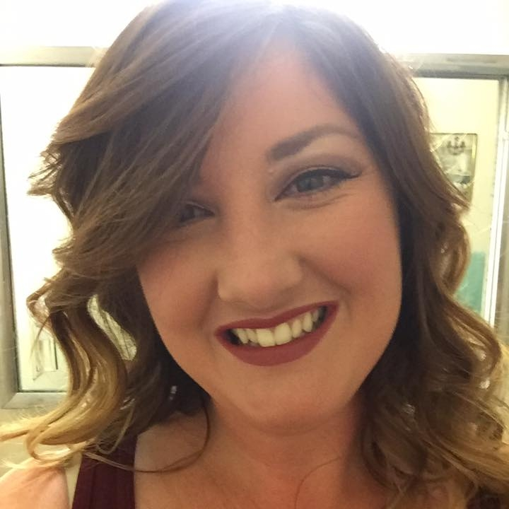

-
About Me
My name is Ashley James. Currently, I go to school full-time at California State University at Monterey Bay where I am finishing my Bachelor’s Degree in Business Administration with a concentration in Information Systems. Besides being a student, I work full time as a Registration Specialist and Compliance Officer for a small fertilizer company located in Paso Robles, CA and part-time at night for The Catalyst Club in Santa Cruz, CA.
Previously I have worked in several industries that include, but are not limited to; Non-Profit Hippotherapy, Customer Service, Manufacturing Sales, Retail Sales, Veterinary Medicine, Real Estate, Medical Records, Health and Human Services, and Entertainment.
Besides work and school, I also enjoy a plethora of outdoor hobbies. I love horseback riding, hiking, camping, and traveling by car or trips by plane. I equally love the ocean and all the beautiful mysteries it holds, and the mountains that keep pristine lakes and evergreen forests. My favorite seasons of year are Spring and Fall because both boast bright colors and crisp, fragrant air.
I grew up as the youngest, and only girl, in a family of three boys. My brothers are 36, 41, and 45 and are married with families. Besides them I also have a foster sister who has been my closest friend since we were both 11 years old. She is also married with children. Between the four of them I have seven nephews, and four nieces. I love being able to watch them grow, and spoil them in a way that only an aunt, can.
My parents are still living in the beautiful foothills of El Dorado County in a house that I spent the last 16 years growing up in. I enjoy traveling to visit and stay with them as much as possible.
Thank you for visiting my page and learning more about me. I hope you enjoy!
-
Education
Shown in the table below is a brief chronology of my educational history. The table includes the institutions where I have studied, beginning with the most recent, and ending with the start of my high school career.
Each educational institution heading is interactive. Selecting the name of the school will take you to the individual website so that you can learn a little more about my history.
While my documented academic career is more qualitative - where I have spent many years at a single institution exploring educational avenues - than quantitative, I have also spent a lot of time outside of the classroom in gaining hands-on experiences through volunteering, and travel opportunities.

CSUMB BIT Building
Educational Institution Location Duration Degree Obtained California State University at Monterey Bay Seaside, CA August 2015 - Present B.S Business Administration and Information Systems Folsom Lake College, El Dorado Center Placerville, CA August 2003 - May 2015 General Education - Transfer Independence High School Diamond Springs, CA October 2002 - January 2003 High School Diploma Union Mine High School El Dorado, CA August 1999 - October 2002 N/A
-
Professional Experience

My professional experience has stemmed from never being afraid to work in any industry. My personality consists of an insatiable curiosity for new and innovative processes and ideas, as well as an analytical mind, and fearless - yet balanced - approach at assessing and taking risks. I have always been considered efficient, adaptable, and flexible in new and challenging work environments and I strive to work as effectively as possible independently, as well as in a team scenario.
The table below lists some of my professional work environments starting with most recent and working backwards.
For my Linkedin profile please click my photo!
Also, for a peek at my RESUME please click the link.


Employer Job Title Location Duration Catalyst Club Manager of Coat check, Security, Box Office Santa Cruz, CA February 2016 - Present Humboldt Nutrients Registration Specialist and Compliance Officer Paso Robles, CA November 2013 - Present El Dorado County Health and Human Services Office Assistant II Placerville, CA August 2010 - July 2011 Gist Silversmiths Account Executive/Liaison to VP Placerville, CA March 2007 - May 2009 UC Davis, VMTH Large Animal Veterinary Technician Davis, CA March 2006 - January 2007 ReMax Gold Real Estate Advertising Coordinator Diamond Springs, CA February 2006 - August 2006


-
Interesting Information
This section is dedicated to some fun and little known facts about me!
The Beginning: A Horse Story


Since I was very young I have always been very fond of animals, and horses in particular. As I grew up I developed a passion for learning as much about horses as I possibly could.
Luckily, my parents quickly realized my dedicated love for horses, and recognized that in order to prevent me from driving them insane with horse-related questions and pleadings for a Christmas pony, that they would need to defer my persistence to a qualified professional. Thus, at the precocious age of 6 years old I was introduced into horse-lessons. Now, I call these horse-lessons because I did not start off riding horses immediately. My parents, bless their souls, wanted to really test my dedication to horses by making earn my lessons. The short translation of this is that I spent the first 8-weeks of my introductory course to horses, shoveling manure. I believe that in some way my parents figured that if anything would discourage me from wanting to pursue climbing aboard one of these gigantic animals and riding majestically into the sunset: poop would be the answer. Almost 26 years later, I can safely say, they were wrong.


I have spent the last 25 years of my life studying and learning as much about these powerfully gorgeous and fascinating animals, as I could possibly handle. I have followed incredible trainers such as Stacy Westfall, please see YouTube video below, and worked for veterinarians in several counties throughout California to try and master all aspects of the horse.
-
Contact Information
Email: asjames@csumb.edu
Phone: (530) 417-4611

Follow me on Facebook!